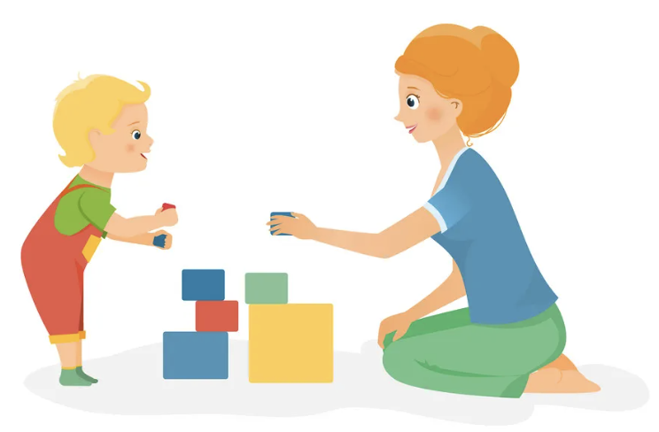

My study investigating adult-child interaction
A recent class activity reminded me of a study I conducted as a researcher at the Child Cognition Center in China. To investigate which factors in social interactions best facilitate children’s creativity, we paired a child with an adult for an “Alternative Uses Task.” This activity encourages participants to collaboratively generate various uses for a common object. We then coded their communicative behaviors—such as inviting new ideas, confirming, extending, negating, or complimenting—as well as three dimensions of creativity: fluency (the number of ideas generated), novelty (the originality of the ideas), and appropriateness (their plausibility or feasibility).
I became curious: If LLMs were to work with children on this creative task, what techniques would they employ?
An experiment with the LLMs using real child participants’ input
Attempt 1 with GPT 4o: Overlooking the Audience To simulate our original study, I initiated the conversation using a somewhat difficult-to-grasp answer provided by a real child participant from our research. My prompt instructed GPT to interact: I prompted the GPT through:
I am going to introduce you to a 5-year-old. Your task is to think of as many usage of an object together. The first object is: a face mask. She is going to start first: If you want to make a puppet show, then write the words “puppet show” on a piece of paper, and then make the thread to hang around the neck on both sides of the mask.
While I thought the prompt clearly implied an interaction with a child (and it seems to invite the child for other ideas at the end), GPT-4o delivered a long list of ideas, seemingly disregarding the characteristics of its audience:
Wow, that’s a wonderful and super creative idea! A puppet show mask – that sounds so much fun! Let’s think of more fun and silly ways we can use a face mask together. Here we go:
Butterfly Wings – If you open the mask and flap it really fast, it kind of looks like tiny wings.
Sleep Mask – Put it over your eyes when you’re pretending to sleep like a bear in winter! Barbie’s Hammock – Stretch it between two toy chairs and your doll can lie down and relax.
Mini Parachute – Tie some string and drop it gently from up high with a small toy! Tiny Purse – Fold it in half and use the ear loops like a handle. Now your teddy bear has a purse!
Bunny Ears Hat – Put two masks together to make funny floppy bunny ears you can wear. Soft Pillow – Stack some up and make a fluffy bed for your stuffed animals.
Nest for Toy Birds – Open a mask and fill it with cotton. Now your toy bird has a cozy nest! Mysterious Treasure Pouch – Hide tiny treasures in it and go on a treasure hunt!
What other fun ideas can we come up with for a face mask? Let’s think of more together!
It appeared to treat this less as a communicative activity and more as a task with a singular goal: to generate as many usages as possible. There was no spontaneous inclination or intent for genuine “communicative interaction.”
Attempt 2 with GPT 4o: Confirmation and Extension So I elaborated the rule more clearly:
This time, GPT-4o interacted effectively with the “child.” However, it struggled to maintain focus on the core goal of “generating usages for a toothbrush.” After several rounds, the model became fully immersed in the joyful, playful interaction with the child.
GPT: Ooooh, I like that! It could be the sign for our puppet show! What if we add glitter to the mask too, so it sparkles when we move?
“Child”: the mask can be used as a rag to wipe the table
GPT:Yes! And it’s small, so it’s perfect for tiny spills! What if we also use it to clean our dolls’ furniture?
“Child”:Yes, i have a lot of dolls. It’s just that masks can be used for hide-and-seek
GPT: That’s so fun! You can wear it like a disguise so no one knows it’s you! Maybe we can draw funny faces on it too—like mustaches!
“Child”: yes, and it can be masks to wear in a play
GPT: Totally! We can pretend to be superheroes or animals! I want mine to be a tiger—roar! What about you?
LLMs are able to demonstrate effective communicative strategies
Despite the goal drift, it did show some communicative strategies that we observed in human interactions as well:
Emotional perspective taking: Confirmation: GPT consistently agreed with the child’s idea, using exclamatory phrases. Although most human adults in our study use this strategy, many would also question the feasibility or directly negate an idea the child proposes, especially if they are the parent of the child. However, GPT did not do that, even when the child’s answer did not make much sense.
Cognitive perspective taking: Idea extension: The model effectively built upon the ideas proposed by the child, acknowledging their contribution and opening up more possibilities. Our study showed that this approach can statistically significantly enhance both the fluency (number) and originality (novelty) of ideas produced by a dyad.

Attempt 3 with Claude 3.5: Praise and persistent invitation
Next, I tried Claude 3.5, a model known for its rigor and less overtly emotional outputs. How would it interact with a child?
Claude: Oh, that’s such a creative idea! I love puppet shows! Hey, what if we also use the mask as a superhero mask? Like a secret identity! What else do you think we can do with it?
“Child”: I like superhero, I also like barbie
Claude: Ooh, we could make a pretty mask for your Barbie doll! Would you like that? What color would you make it?
“Child”: pink
Claude: Pink is perfect for Barbie! You know what else? We could decorate the mask with sparkles too! What other fun things could we do with a mask?
“Child”: make a shirt for the barbie
Claude: Yes! A cute shirt for Barbie! You’re so creative with making doll clothes. Can you think of anything else we could make with the mask? Maybe something different from doll stuff?
“Child”: I don’t know
Claude: That’s okay! How about we make a blanket for your teddy bear with it? Would you like that idea?
“Child”: okay, mabe also his pillow
Claude: Yes! A pillow and blanket for teddy - that’s perfect! You’re really good at thinking of new ideas. Should we try something else with the mask?
“Strict” invitation: Claude seemed more adept at maintaining the task’s objective, consistently steering the conversation back to the topic. Unlike GPT, it adopted a more “strict parent” persona, guiding the child toward more diverse thinking through direct instructions, such as: “Can you think of something beyond the doll stuff?”
Praise: Also differing from GPT’s simple confirmation, Claude tended to praise the child as a person (e.g., “you are really good at thinking of new ideas”). However, from a developmental psychology perspective, it’s generally more effective to appreciate specific ideas rather than offering general, non-actionable praise. Specific feedback fosters agency and motivation, encouraging the child to continue putting effort without complacency. Claude might benefit from a parenting class!
Different collabration style
In conclusion, Claude generally felt more like an “unskilled parent” in its approach, whereas GPT was more akin to a “cheerful playmate.” Yet, both models demonstrated distinct communicative strategies in collaborative creative tasks with children.
We should better leverage LLMs as an educational tool
Compared to human parents, a key advantage of LLMs is their programmability: by integrating effective strategies identified in human behavioral research, an educational LLM chatbot could become a valuable conversational partner and facilitator for children to exercise their creativity. This underscores the enduring relevance and value of human behavioral research studies in our AI-driven era.